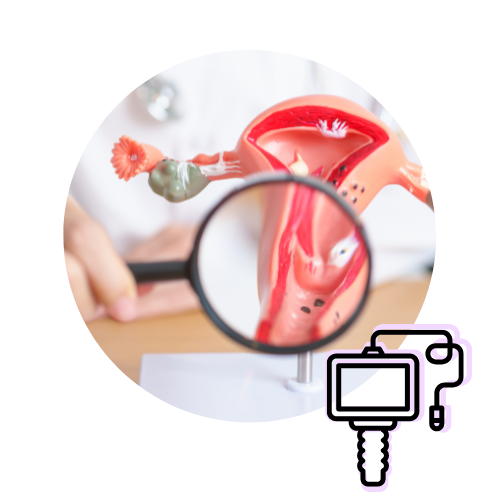
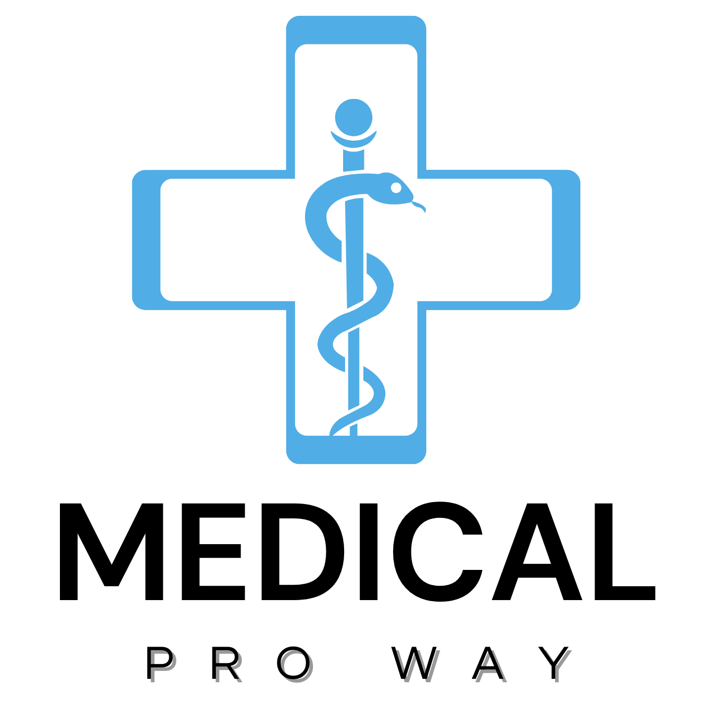

Ultrasonidos
Estudios para valorar diferentes órganos y regiones del cuerpo, incluido el ultrasonido mamario.
Consultar disponibilidadEn Líderes Mixtecos A.C. acercamos servicios de salud y estudios diagnósticos con un enfoque humano, accesible y preventivo.
Somos una Asociación Civil comprometida con el bienestar de nuestra comunidad. Nuestro principal objetivo es acercar servicios esenciales que impacten positivamente en la calidad de vida de las personas, especialmente aquellas en situación de vulnerabilidad.
Proporcionar servicios de salud integrales, personalizados y de alta calidad, mediante profesionales comprometidos con la excelencia.
Ser líderes en servicios de salud de alta calidad, innovadores y accesibles, contribuyendo al bienestar y calidad de vida.
La información publicada por la organización establece un flujo de atención pensado para facilitar el acceso a los estudios.
Horario publicado de 09:00 a 16:00, sujeto a posibles cambios.
La toma de estudios dura aproximadamente entre 15 y 20 minutos por paciente.
Posteriormente se asigna una consulta totalmente gratuita.
Si se detecta una enfermedad durante las jornadas, se proporciona tratamiento con descuento.
Los pacientes pueden pasar a ambos estudios.
Conozca los principales servicios disponibles en Líderes Mixtecos A.C., orientados a la prevención, valoración y bienestar.
Estudios para valorar diferentes órganos y regiones del cuerpo, incluido el ultrasonido mamario.
Consultar disponibilidad
Servicio de colposcopia como parte de la atención ginecológica y prevención de la salud femenina.
Valoraciones básicas para conocer y registrar datos generales del paciente.
Examen rápido, indoloro y no invasivo que registra la actividad eléctrica del corazón.
Consulte disponibilidad, horarios y opciones de atención directamente por WhatsApp.
Plaza Altarez, Avenida 29 Oriente y 6 Sur No. 601,
“Cuazitla u Opateno” 7B,
San Pedro Cholula, Puebla.
Medical Pro Way en colaboración de Líderes Mixtecos A.C., para acercar productos y servicios enfocados en el cuidado, la prevención y el bienestar de las personas. Integramos suplementos alimenticios y atención especializada con un enfoque humano, accesible y responsable.
Conocer Medical Pro Way